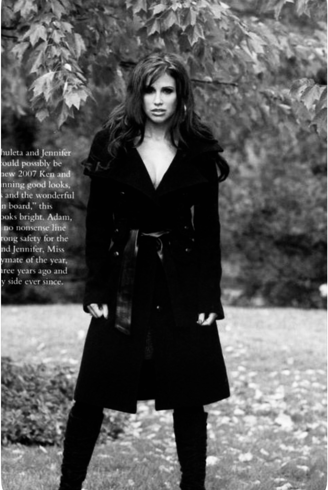

The Story
The girl they underestimated.
I grew up in a small Ohio town being told what I couldn’t do. I’ve been the quiet one, the fighter, the survivor — and the woman on the magazine cover, smiling while she was breaking inside.
I’ve lived through things I was never supposed to survive. For a long time I stayed silent about all of it. Then I stopped surviving long enough to actually heal — and I learned that your worst chapters can become your purpose.
“You didn’t need rescuing. You needed time. Time to find your voice. Time to believe it mattered.”
Start with the first chapter